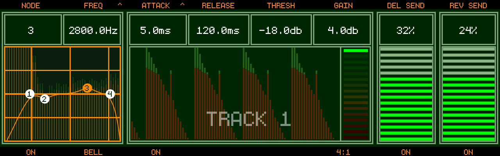
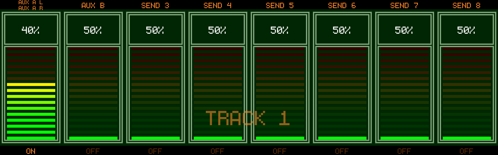
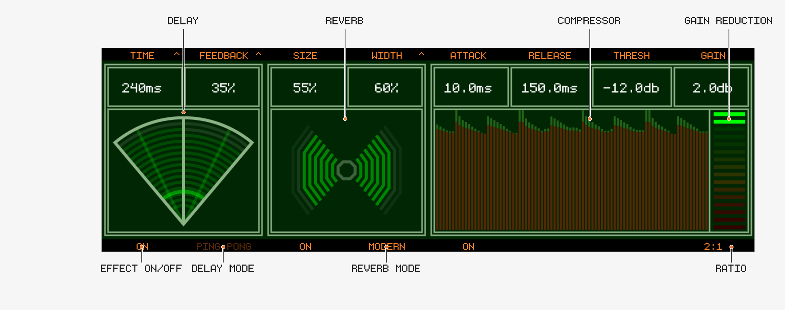
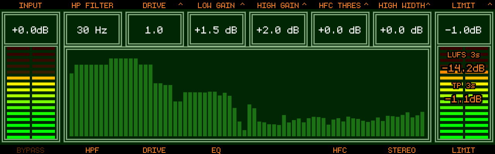

Effects & Mastering
Track8 uses a two-stage FX system:
- Per-track FX (Filter, Compressor, Sends)
- Global Master FX + Mastering (with brick-wall limiter)
🧭 Navigating the FX Screens
- The arrow keys are free in all FX screens — navigate the tape without leaving the screen (new in v1.2.1)
📋 Copy / Cut / Paste FX values (new in v1.2.1)
On every FX screen the edit keys work on the whole view’s values instead of tape audio:
Works on Track FX, Track Sends, Master FX, Mastering, External Inputs and the Mixer. Automation lanes are not touched — only the base values.
🎹 MIDI Learn
Hold any FX encoder for 2 seconds to map it to a MIDI CC — see MIDI Remote Control (since v1.1.4).
🎛 Track FX

- Access via
- The edited track is clearly labeled TRACK n at the top (since v1.1.3)
Track Button→ quick-select another track
Filter
- 4-node filter, per node choose a type with
Track Button 2:- Low Pass / High Pass / Band Pass / Notch / Low Shelf / High Shelf / Bell (Bell since v1.2.0)
Encoder 1selects a node, push toggles the node on/offEncoder 2adjusts the node parameter, push cycles FREQ → Q → GAIN (Gain only for Shelf/Bell types)Track Button 1toggles the whole filter on/off- Touch control (new in v1.2.1): tap a node on the graph to select it, drag to set frequency (horizontal) and gain (vertical, Shelf/Bell types)
Compressor
- Per-track dynamics with sidechain input
Encoder 3: Attack — push to switch to sidechain source (select another track, or off)Encoder 4: Release,Encoder 5: Threshold,Encoder 6: Makeup gainTrack Button 3: on/off,Track Button 6: cycle Ratio- Gain-reduction ladder: green on top = no gain reduction, segments extend down into red as the compressor works
Sends
Encoder 7: Delay Send,Encoder 8: Reverb SendTrack Button 7/Track Button 8: toggle the sends on/off- Delay/Reverb sends are true sends — the send taps a copy of the signal, the dry track level is never attenuated (since v1.2.1)
Track Sends (new in v1.2.1)

With an external audio interface, each track gets 8 additional aux sends to hardware outputs:
- Press
Encoders 1-8set the send level for sends 1-8Track Buttons 1-8toggle each send on/off;Track Buttonselects the track- Sends are true post-fader sends, summed per bus across all tracks and routed straight to the output pairs configured under
SENDSin the Audio settings — see External Audio
Important Note
- Internal processing is 32-bit float
- Red ≠ clipping (only >1.0 signal)
👉 Real clipping happens at final output
🖥 Master FX

The global Delay and Reverb (fed by the track sends) plus a master bus compressor.
Delay
Encoder 1: Time — ms or beat-synced (push to toggle). Synced values are note lengths from1/1to1/64:1/4is a quarter note in every time signature (fixed in v1.2.1)Encoder 2: Feedback / Width / Mod Rate / Mod Depth (push to cycle)Track Button 1: Delay on/off — off mutes the delay return; the track sends themselves are unaffected (since v1.2.1, previously the sends passed through dry)Track Button 2: Ping-pong on/off
Delay LFO (chorus / flanger)
(since v1.2.1)
The delay time can be modulated by an LFO — this turns the delay into a chorus or flanger:
- Mod Rate (0.1–10 Hz) — LFO speed
- Mod Depth (0–20 ms) — how far the delay time swings;
0 ms= LFO off (default) - Width — with modulation active, Width also sets the L/R phase offset of the LFO:
0%= both channels move together (mono chorus),100%= 180° apart (wide stereo). When Ping-pong is on, Width additionally controls the ping-pong spread as before. Shift + Encoder 2= fine steps
Recipes: Chorus — Time 15–30 ms, Feedback 0–20 %, Mod Rate 0.3–1 Hz, Mod Depth 2–5 ms. Flanger — Time 10 ms, Feedback 50–80 %, Mod Rate 0.1–0.5 Hz, Mod Depth 1–3 ms. The radar’s time arc wobbles to indicate rate and depth.
Reverb
Encoder 3: SizeEncoder 4: Width / Damp / Pre-delay (push to cycle; a Gate page appears for the Gated algorithm)Track Button 3: Reverb on/offTrack Button 4: cycle algorithm
Algorithms
- Hall
- Ambient
- Gated
- Modern
Compressor
Encoder 5: Attack,Encoder 6: Release,Encoder 7: Threshold,Encoder 8: Makeup gainTrack Button 5: on/off,Track Button 8: cycle Ratio
🎚 Mastering Section

Access: press
Chain
- Input Gain (
Encoder 1) - High-pass filter (
Encoder 2,Track Button 2) - Tape Drive — Drive + Thickness (
Encoder 3, push to cycle;Track Button 3) - Low Shelf EQ — Gain + Frequency (
Encoder 4, push to cycle) - High Shelf EQ — Gain + Frequency (
Encoder 5, push to cycle) - HF Compressor — Threshold + Crossover (
Encoder 6, push to cycle;Track Button 6) - Stereo Enhancer — Width + Space (
Encoder 7, push to cycle;Track Button 7) - Output Gain (
Encoder 8) - Brick-wall Limiter (see below)
Track Button 1bypasses the whole Mastering sectionTrack Button 4toggles the Low/High EQ
🧱 Master Limiter (since v1.1.1)
A realtime (zero latency), brick-wall limiter at the very end of the signal chain:
- Push
Encoder 8to cycle OUTPUT → LIMIT → L-RELEASE Track Button 8toggles the limiter on/off — except on the L-RELEASE page, where it toggles AUTO releaseLIMIT: set the ceiling (-12 to 0 dBFS)L-RELEASE: set the release time (5-1000 ms)- While on LIMIT/L-RELEASE the screen shows:
- LUFS 3s — loudness of the last 3 seconds
- TP 3s — True Peak (dBTP) of the last 3 seconds
📈 Spectrum Analyzer (new in v1.2.1)
The Mastering screen shows a realtime spectrum of the master output. It is fed post-limiter, so it always shows what actually leaves the device — even with Mastering bypassed.
Key Concept
- This is your final shaping stage
- Equivalent to a mastering chain — use the limiter as a safety ceiling and the LUFS/True Peak readout to judge your final level